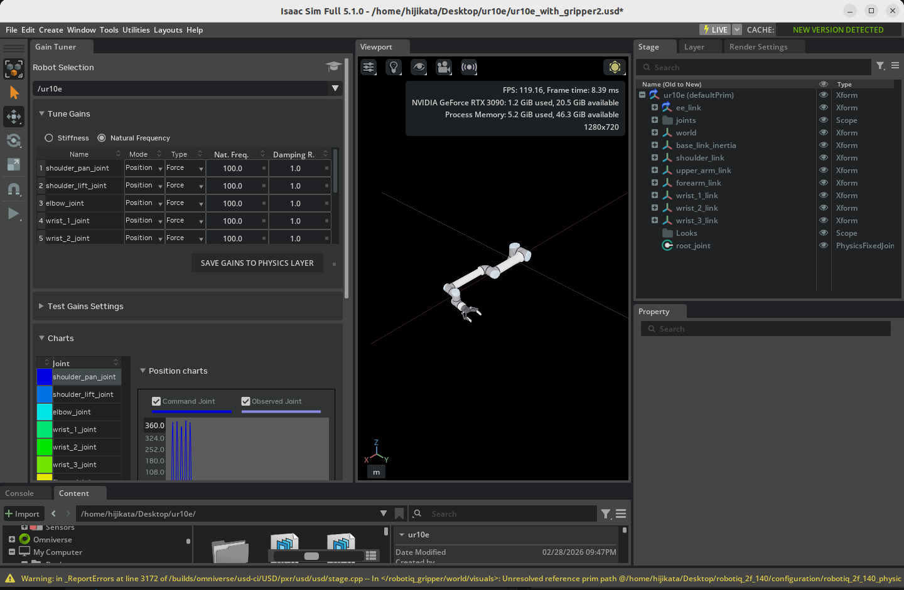

Tuning Joint Drive Gains¶
Learning Objectives¶
After completing this tutorial, you will have learned:
- How to launch the Gain Tuner extension and use its UI
- How to tune position drive gains
- How to configure velocity limits to emulate industrial robots
- How to tune velocity drive gains
- How to save tuned gains back into the asset (USD file)
- How to visualize and evaluate the result with plots
Getting Started¶
Prerequisites¶
- Complete Tutorial 7: Configure a Manipulator before starting this tutorial.
- Your robot asset must have the following two applied (both are applied automatically for robots imported from URDF):
- Robot Schema (Robot API): required for the Gain Tuner to recognize the robot
- Articulation Root: required for the asset to behave as a single articulation in the physics simulation
Relationship Between the Gain Tuner and Robot Schema
The Gain Tuner in Isaac Sim 5.1 uses the Robot Schema (IsaacRobotAPI, IsaacLinkAPI, IsaacJointAPI) internally to understand the robot's structure. Specifically, the Select Robot dropdown lists only prims that have Robot API applied. Assets without the Robot Schema will be invisible to the Gain Tuner even when their articulation is enabled.
When you import a robot from URDF in Tutorial 6, the URDF importer applies the Robot Schema automatically. So as long as you stay on the URDF import path, no extra action is needed.
For robots rigged manually as in Tutorial 5, or for existing USD assets that did not come through URDF, you must apply the Robot Schema separately. See Tutorial 5a: Applying the Robot Schema for the procedure.
Estimated Time¶
Approximately 15-20 minutes.
Overview¶
To get a robot to behave correctly in Isaac Sim, you need to tune each joint's drive gains (the parameters of its PD control). If gains are too low, the robot cannot follow target positions; if they are too high, it oscillates or becomes unstable.
In Tutorial 7, you learned the basics of the Gain Tuner using the abstracted Natural Frequency and Damping Ratio parameters. In this tutorial, you will go further with direct Stiffness / Damping tuning, velocity limits for industrial robots, velocity drive tuning, and the saving and visualization of the tuned result. The flow is:
- Launch the Gain Tuner — open the extension and load the robot
- Tune position drives — adjust Stiffness and Damping
- Set velocity limits — emulate the speed caps of industrial robots
- Tune velocity drives — Damping in velocity-control mode
- Save the gains — write them back into the asset's physics layer
- Visualize the result — evaluate behavior on the commanded vs. measured plots
What is a Joint Drive?
A joint drive in Isaac Sim is like a virtual motor built into each joint. When you give it a target (position or velocity), an internal PD controller (proportional-derivative control) computes the error against the target and produces torque to drive the joint.
Two parameters matter most in PD control:
- Stiffness (P gain): the strength of the spring that pulls the joint back to the target position. Higher values reach the target faster, but excessive values cause overshoot or oscillation.
- Damping (D gain): the strength of the friction that suppresses motion proportional to velocity. It dampens oscillation, but excessive values make the response sluggish.
A good gain set is one that reaches the target quickly, with no oscillation and minimal overshoot.
Position Drive vs. Velocity Drive
Isaac Sim joint drives have two modes:
| Mode | Control Target | Primary Parameters | Use Cases |
|---|---|---|---|
| Position Drive | Target position | Stiffness + Damping | Trajectory tracking and pose holding for manipulators |
| Velocity Drive | Target velocity | Damping only (Stiffness=0) | Gripper grasping, wheel rotation |
Which mode to use depends on the role of the joint. This tutorial covers tuning for both.
Step 1: Launching the Gain Tuner Extension¶
1-1. Open the Robot Asset¶
Open the robot you want to tune (e.g., the UR10e you configured in Tutorial 7) in Isaac Sim.
Verify That the Robot Schema and Articulation Are Applied
These are applied automatically for robots imported via URDF, but it is worth verifying:
- Select the robot's root prim (e.g.,
/World/ur10e) in the Stage panel. - In the search field next to the Add button or in Raw USD Properties in the Properties panel, confirm the following are applied:
- IsaacRobotAPI (Robot Schema): required for the Gain Tuner dropdown to list the robot
- PhysicsArticulationRootAPI (with Articulation Enabled on): required for the robot to be driven as an articulation
If either is missing, redo the URDF import from Tutorial 6, or follow Step 1 of Tutorial 7 to set up the articulation.
1-2. Open the Gain Tuner¶
From the menu, click in the following order to open the Gain Tuner window:
Tools > Robotics > Asset Editors > Gain Tuner

Use the Select Robot dropdown at the top of the window to pick the robot to tune. Assets with the Robot Schema applied are listed automatically.
After selection, the joint list on the left shows every joint of the selected robot.
If the Gain Tuner Extension Is Not Available
It is enabled by default, but if it does not appear in the menu, open Window > Extensions and search for omni.isaac.gain_tuner to enable it.
1-3. UI Layout¶
The Gain Tuner window is divided into three main areas:
| Area | Role |
|---|---|
| Joint List (left) | Lists all joints of the robot. Selecting a joint targets it for parameter editing and result visualization |
| Parameters (center) | Edit Stiffness, Damping, Max Joint Velocity, etc., for the selected joint(s) |
| Plots (right / bottom) | After running a test, shows comparison plots of commanded vs. measured values |
Selecting Multiple Joints
The joint list on the left supports multi-selection:
- Ctrl + Click: toggle the clicked joint
- Shift + Click: range-select from the first selected joint to the current one
With multiple joints selected, you can set gains in bulk or compare plots side by side.
Step 2: Tuning Position Drive Gains¶
A position drive uses PD control to drive a joint toward a target angle (or position). The goal is to balance Stiffness and Damping.
2-1. The Tuning Strategy¶
Tune in the following order:
- Set Damping to zero — observe the response with only the proportional term (Stiffness)
- Increase Stiffness — find a value at which the joint converges near the target
- Drop Stiffness by one order of magnitude — leave headroom for overshoot
- Add Damping — start at one order of magnitude below Stiffness
- Fine tune — adjust both while watching stability, response speed, and overshoot
Why This Order?
If you adjust Stiffness with Damping already engaged, you cannot tell whether oscillation is being suppressed or whether the response is genuinely good. Find the "barely converges" point with Stiffness alone, then drop it by one order of magnitude to leave headroom before adding Damping. This is the safe way to converge on good gains.
2-2. Set Damping to Zero¶
- Select the joint(s) to tune in the joint list on the left (multi-selection supported).
- Enter
0in the Damping field in the center. - Set Stiffness to a starting value (e.g.,
100).

2-3. Increase Stiffness Step by Step¶
Run the simulation (click Play in the timeline) and observe whether the joint converges to the target position.
- If it does not converge, multiply Stiffness by 10 and re-run (e.g., 100 → 1,000 → 10,000).
- If it oscillates or runs away near the target, that value is the upper limit guide.
Once Stiffness is high enough that the joint roughly converges near the target, drop it by one order of magnitude (about 1/10) to leave stability headroom.

2-4. Add Damping¶
Once Stiffness is set, enter about 1/10 of that Stiffness as the starting Damping value.
Example: with Stiffness = 1,000, start at Damping = 100.
Run the simulation again and evaluate using these criteria:
| Aspect | Good State | Bad State and Action |
|---|---|---|
| Settling speed | Reaches the target quickly | Too slow → raise Stiffness |
| Overshoot | Ideally within 1% of the target | Large → raise Damping |
| Oscillation | Monotonic, no oscillation | Oscillating → raise Damping |
| Sluggishness | Not over-damped | Sluggish → lower Damping |
Recommended Performance Target
The Isaac Sim official guide recommends keeping the error from the target (including overshoot) within 1%. For applications with looser accuracy requirements, more relaxed criteria are usually fine in practice.
2-5. For Robots With Built-In Gravity Compensation¶
Robots like the UR10e and Franka are designed to be used with gravity compensation in their controller. It is common to also disable gravity inside Isaac Sim so the joints do not need to fight gravity:
- Select each link (Rigid Body) in the Stage panel.
- Open the Physics > Rigid Body section in the Properties panel.
- Check Disable Gravity.
This removes the need for the drive to produce gravity-compensating torque, letting you focus tuning on tracking accuracy.
Tuning With Gravity On
If you do not compensate for gravity, Stiffness must be high enough that the joint can resist gravity. Since the required value depends on link mass and pose, test in the pose with maximum gravity load (e.g., the base of an arm extended horizontally) to obtain conservative gains.
2-6. Joint Grouping Strategy¶
For robots like humanoids whose arms and legs move independently, tuning every joint at once is impractical. The efficient approach is to group joints by function, tune each group separately, then test all together at the end.
Example for a humanoid:
- Group 1: 7 joints of the right arm
- Group 2: 7 joints of the left arm
- Group 3: both legs (synchronized for walking)
- Final: move all joints to check for cross-group interference
Step 3: Velocity Limits and Industrial Robots¶
Many industrial robots (UR, ABB, KUKA, etc.) come with PD control pre-tuned by the manufacturer, plus per-joint velocity caps. To replicate this behavior in Isaac Sim, set a maximum joint velocity in addition to the gains.
3-1. Strengthen Stiffness¶
To emulate an industrial robot, roughly double the Stiffness you obtained in Step 2. This makes the joint reach the velocity cap quickly and travel at full speed toward the target.
Example: ordinary Stiffness = 1,000 → industrial-style Stiffness = 2,000.
3-2. Set the Maximum Joint Velocity¶
Set a velocity cap on each joint:
- Select the target joint in the Stage panel.
- Expand the Joint > Advanced section in the Properties panel.
- Enter the per-axis maximum speed (rad/s or deg/s) in Maximum Joint Velocity.
Refer to the manufacturer's datasheet for each axis's maximum angular velocity.
USD Defaults Tend to Be Too High
USD's default values are often well above what real systems use. Lowering them to the operational limits of the actual hardware is recommended. This benefits both safety and simulation stability.
3-3. Verify the Velocity Cap¶
Run the simulation and check the Gain Tuner plots to ensure joint velocity does not exceed the configured cap. If it does, lower Stiffness; if it never reaches the cap, raise Stiffness, until it just barely reaches the cap.
Step 4: Tuning Velocity Drive Gains¶
A velocity drive controls the joint to follow a target velocity. It is used for gripper grasping and wheel rotation (also used in Tutorial 10: Rig Closed-Loop Structures).
4-1. Set Stiffness to Zero¶
Velocity drives ignore the position target and use only the velocity target:
- Select the target joint(s) in the Joint List.
- Enter
0for Stiffness. - Set Damping to a starting value (e.g.,
100).
Why Stiffness=0 Means 'Velocity Control'
Internally, an Isaac Sim joint drive is always a PD controller, but setting Stiffness to 0 removes the proportional (position-error) term, leaving only Damping to determine torque. Damping produces torque proportional to velocity error, so the result is a controller that tracks the target velocity.
4-2. Increase Damping Step by Step¶
Run the simulation and increase Damping until the joint reaches the target velocity:
- Set the target velocity (Target Velocity).
- Run the simulation.
- Multiply Damping by 10 until the measured velocity reaches the target on the plot.
- Stop just where it nearly reaches the target.
4-3. Accommodating Payload Variation¶
If the load is expected to vary (grasped objects, transported items), setting Damping about 10% higher helps maintain target velocity under load.
Example: Damping = 5,000 unloaded → 5,500 with payload.
4-4. Setting Output Limits¶
Velocity drives let you cap the output via Maximum Joint Velocity or Maximum Joint Force:
| Limit | Where to Set | Effect |
|---|---|---|
| Maximum Joint Velocity | Joint > Advanced | Caps speed |
| Maximum Joint Force | Drive > Max Force | Caps drive force |
For grasping, lowering Max Force prevents excessive force on the grasped object (see Step 5-6 of Tutorial 10).
Step 5: Saving Gains to the Asset¶
Save the tuned gains to a USD file so they persist across sessions.
5-1. Save Gains to Physics Layer¶
Click the Save Gains to Physics Layer button in the Gain Tuner window.
Following the recommended robot asset structure (Asset Structure Guidelines), this button automatically locates the layer that holds the physics configuration and writes the new gains there.
Why Save to a Dedicated Layer
Isaac Sim robot assets are recommended to separate USD layers by role — meshes, physics, sensors, and so on (see the layer editing workflow in Tutorial 10). Centralizing physics parameters in the physics layer means tuning is preserved across mesh updates.
5-2. When You Cannot or Do Not Want to Save There¶
If you do not have write permission, or you do not want to alter the original robot asset, record the gain change as an override in a separate scene file. The most explicit and safe approach is to use File > Save As to save under a new file name (e.g., my_robot_with_tuned_gains.usd). This way:
- The original robot USD file is left untouched
- The new file references / sublayers the robot asset and writes the gain overrides on top of it
- Opening the new file shows the tuned gains; opening the original asset shows the pre-tuning state
File > Save Overwrites the Root Layer
File > Save overwrites the Root Layer of the currently open stage as-is. As a result, if you have the robot's USD file itself open and run File > Save, you will overwrite the original robot whenever you have write permission.
Using Save thinking it will "create a local override" is dangerous. To avoid changing the robot itself, always use Save As to save into a separate file, or open your own scene file that already references the robot (Reference / Payload) before tuning.
Which Save Method to Use
| Situation | Recommended Save Method |
|---|---|
| Persist gains as part of the original asset | Save Gains to Physics Layer (5-1) |
| Leave the original asset alone and create a variant for your use | File > Save As to a separate file |
| You already have your own scene file that references the robot | File > Save (changes are written only to the scene file) |
Step 6: Visualizing the Result¶
6-1. Reading the Plots¶
After running a test, the Gain Tuner plot area shows the following:

| Element | Meaning |
|---|---|
| Solid (saturated) line | Commanded value (Commanded Position / Commanded Velocity) |
| Faded line | Measured value (the actual joint position / velocity) |
| Color coding | One color per joint |
In an ideally tuned state, the faded line (measured) overlaps the solid line (commanded) without delay.
6-2. What to Read From the Plots¶
| Plot Shape | Diagnosis | Fix |
|---|---|---|
| Measured oscillates before reaching the command | Stiffness too high | Lower Stiffness or raise Damping |
| Measured cannot catch up to the command | Stiffness too low | Raise Stiffness |
| Overshoots the target and bounces back | Overshoot (not enough Damping) | Raise Damping |
| Smooth but slow response | Over-damped | Lower Damping |
| Plateaus at the velocity cap | Limited by Maximum Joint Velocity (normal for industrial-style setups) | Revisit the cap if needed |
6-3. Per-Joint Evaluation¶
Clicking an individual joint in the Joint List on the left shows that joint's plot in detail. With multiple joints selected (Ctrl/Shift click), you can view multiple plots side by side for comparison.
Test Results Show Up Only After the Test Finishes
Plots may not update in real time during simulation. Stop the simulation first, then check the plots.
Troubleshooting¶
| Symptom | Cause | Resolution |
|---|---|---|
| The robot does not appear in the Gain Tuner dropdown | Robot Schema (IsaacRobotAPI) is not applied | If imported from URDF, this should be automatic. For manually built assets, apply the Robot Schema or re-import via URDF |
| After selection, joints cannot be retrieved or an error occurs | Articulation is not configured | Check that the Articulation Root API is applied to the root joint and Articulation Enabled is on (see Step 1 of Tutorial 7) |
| The joint does not converge to the target | Stiffness too low / no gravity compensation | Multiply Stiffness by 10, or enable Disable Gravity |
| The simulation diverges immediately on start | Stiffness too high | Reduce Stiffness to 1/10 |
| Fine oscillation | Damping too low | Multiply Damping by 2-10 |
| Sluggish or slow response | Damping too high | Halve Damping |
| Joint exceeds the industrial maximum velocity | Maximum Joint Velocity not set | Set it for each axis under Joint > Advanced |
Warning: Stiffness attribute is unsupported for articulation joints |
Stiffness was set on the joint itself | Use the Drive-side Stiffness on that joint instead (see Step 5-3 of Tutorial 10) |
| Saved, but gains revert on next launch | Failed to write to the physics layer | Check the layer's write permission, or save the stage manually |
Summary¶
This tutorial covered the following topics:
- Launching the Gain Tuner extension and its UI layout (Joint List / Parameters / Plots)
- Tuning position drives (start at Damping=0, find the convergence point with Stiffness, then suppress oscillation with Damping)
- Emulating industrial robots (stronger Stiffness plus Maximum Joint Velocity caps)
- Tuning velocity drives (Stiffness=0, track the target with Damping alone)
- Saving gains to the asset (writing to the physics layer with Save Gains to Physics Layer)
- Plot-based evaluation (commanded vs. measured)
With these adjustments in place, the robot will move stably and responsively, providing a solid foundation for higher-level control algorithms to behave as expected.
Going Deeper
For the mathematical background of the Gain Tuner and PD control theory, refer to the Isaac Sim official documentation: Gain Tuner Extension. To implement a custom controller that writes torque commands directly, the official "Adding a Controller" tutorial is a useful reference.
Next Steps¶
Proceed to the next tutorial, "Asset Optimization", to learn performance optimization techniques for robot assets.